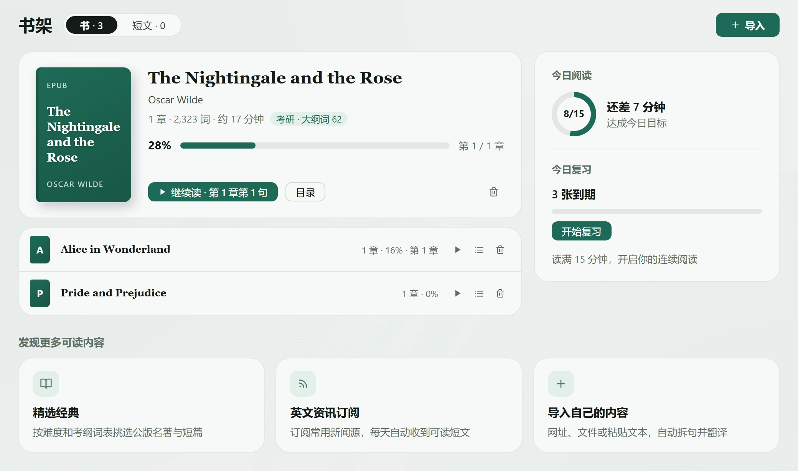
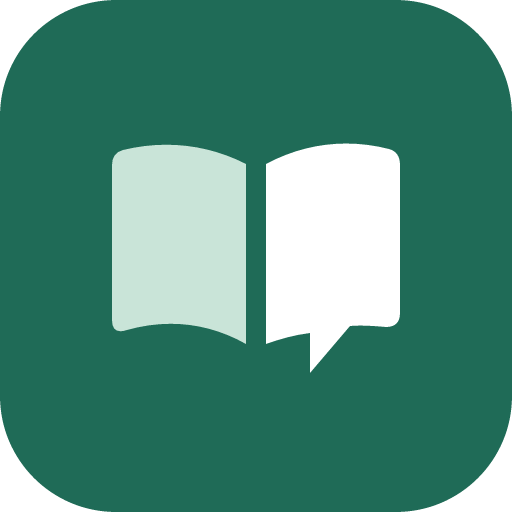
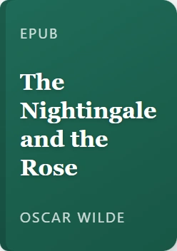
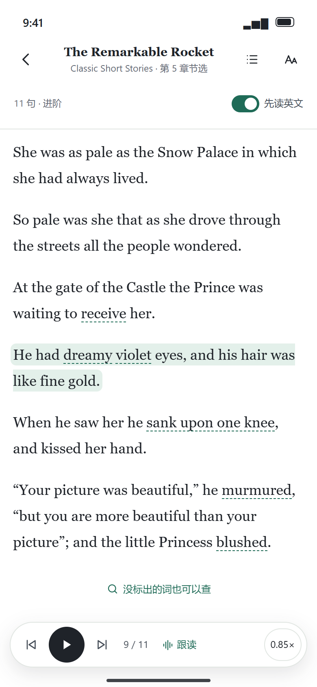
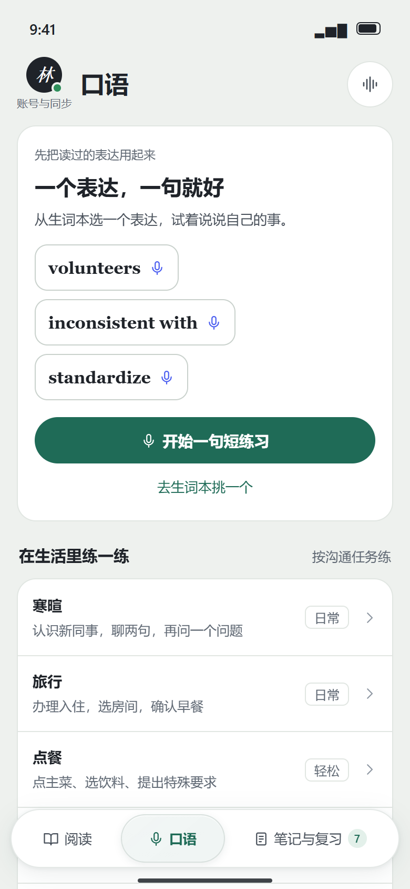

导入自己的材料
书籍、文档和网页保存在自己的书架里，接着上次的位置阅读。


支持这些内容
- EPUB
- DOCX
- TXT
- 网页
- RSS
导入文件、粘贴文章，或添加网页与 RSS。

沉浸口语 下载客户端
She said that she would dance with me if I brought her red .
rose 玫瑰 把词留在这一句里。
她说，只要我给她带来红玫瑰，她就愿意和我跳舞。
从书里的句子切换到对话，收藏的表达进入复习。
原文查词，带着这一句开口。
听原句、录下自己的声音，回看需要再练的词。
先听原句，再试着完整说一遍。
回到没说顺的那个词，接着练。
把反馈和自己的声音一起听。
书籍、文档和网页保存在自己的书架里，接着上次的位置阅读。

导入文件、粘贴文章，或添加网页与 RSS。
阅读与口语练习的原型预览。


客户端免费开源。云翻译、AI 对话与部分语音服务可登录沉浸云使用，也可以配置自己的 API Key；费用与可用能力取决于账号额度或服务商。macOS 是独立菜单栏翻译版本，功能以其版本说明为准。
支持 EPUB、TXT、DOCX、带文本层的 PDF、网页、粘贴文本与 RSS，也可发现公版书。扫描版 PDF 请先识别文字，旧 DOC 请先转为 DOCX。
学习资料默认保存在本地；使用云翻译、对话、识别、评测或开启同步时，会发送必要内容。原声留在录制设备，不作为跨端同步资料。详见隐私政策。